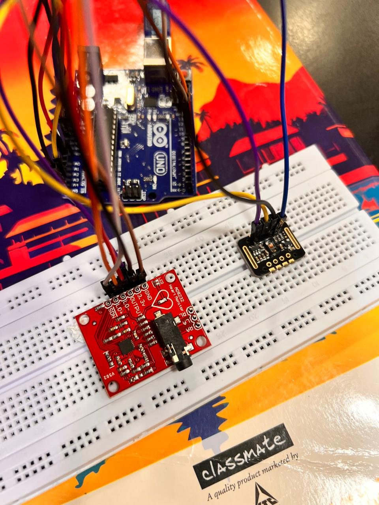
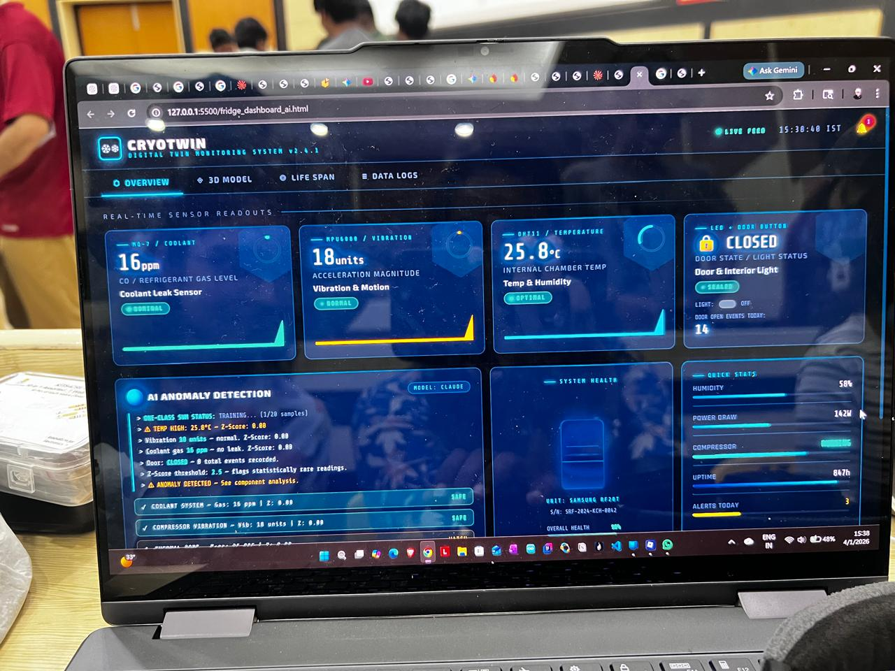
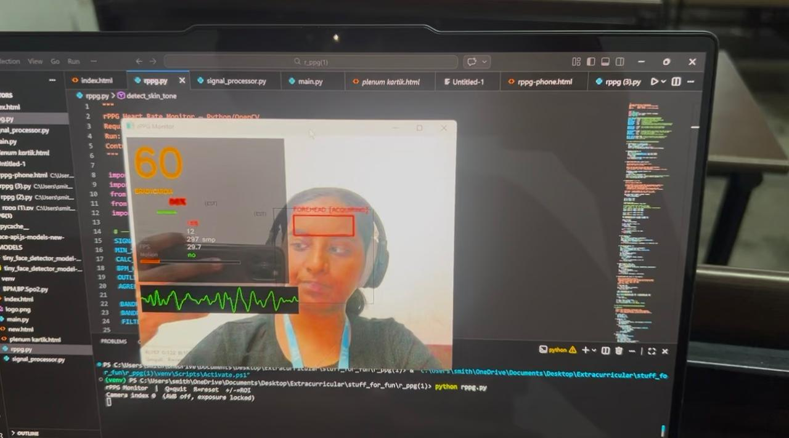

Projects

Smart Cuffless Blood Pressure Estimator
Biomedical sensing system using ECG and PPG signals for Pulse Transit Time based blood pressure estimation.
Technologies: Arduino, MAX30102, AD8232

Digital Twin of a Refrigerator with a Continuous Monitoring Dashboard
Digital twin application with firebase database and AI inteference
Technologies: html, CSS, JavaScript, Firebase, OpenAI API, Electronics

Remote Photoplethysmography System using a Webcam
Contactless heart rate monitoring system using a webcam for remote photoplethysmography signal acquisition and processing.
Technologies: Python, OpenCV, Signal Processing

Embedded Systems Mini Projects
Hardware-focused embedded systems experiments and implementation projects.
Technologies: Arduino, C Programming